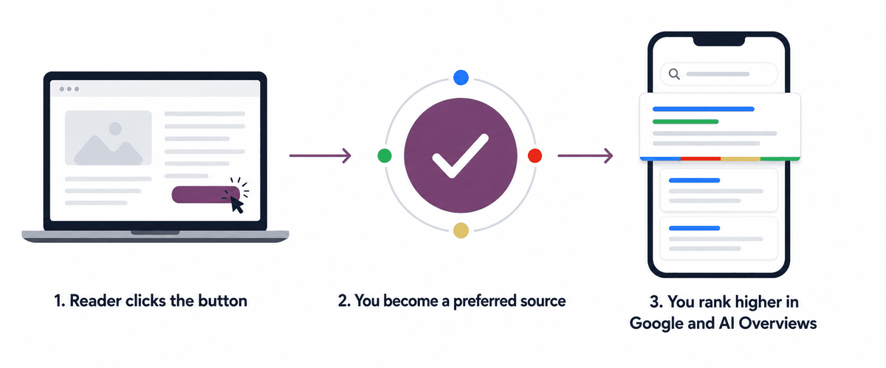
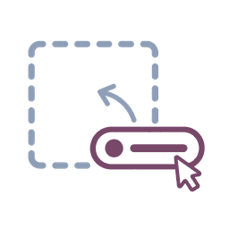
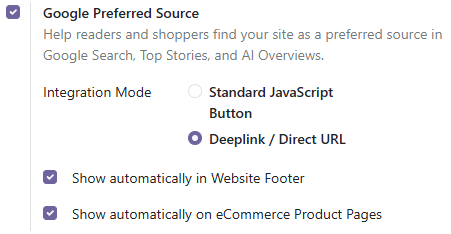
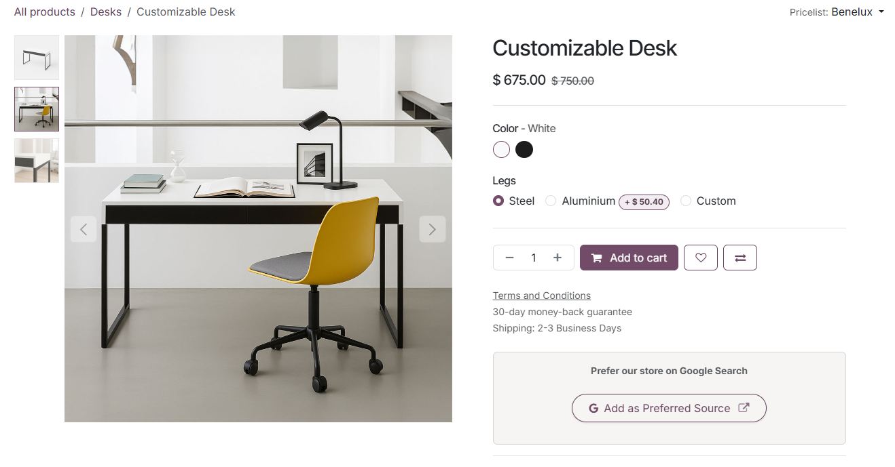

Google's Preferred Sources feature lets a reader tell Google “show me more from this site”. This module drops the official Google button onto your Odoo website and eCommerce store so your visitors can do that in one click — no theme edits, no custom code.
Every opt-in is a lasting SEO and GEO signal: that reader sees your pages ranked higher in their Google Search results, in Top Stories, and in Google's AI Overviews. Zero ad spend.
Readers who mark you as a preferred source see your pages surface higher and more often in their Google Search results. A direct, reader-driven ranking signal that classic on-page SEO cannot buy.
Google's AI Overviews and AI Mode lean on the sources a user prefers. This is one of the few direct levers you have on Generative Engine Optimization (GEO) and Answer Engine Optimization (AEO).
News sites, magazines and blogs get repeat Top Stories visibility with every reader who opted in — the hardest slot in Google to win, handed to you by your own audience.
No layout shift, no render blocking, no effect on Core Web Vitals. The deeplink mode loads no third-party script at all, so strict CSP and cookie-consent sites stay compliant.
Built for: news & magazine publishers · blogs · content marketing sites · eCommerce brands · SaaS sites · any Odoo website doing serious SEO.
Renders Google's own localized badge, with light and dark themes and automatic or manual language selection.
Show the button automatically on every product page so shoppers can follow your brand straight from Google Search.

A drag-and-drop building block. Drop the badge into any page, the footer, or a blog post from the Website Builder.
Website › Configuration › Settings › Google Preferred Source. Every option is per-website, so multi-website databases stay independent.

Loads Google's official script and renders the branded, localized button. Always matches Google's current design.
A plain Odoo-styled link straight to Google's Source Preferences tool. No third-party script is loaded — useful for strict CSP or cookie-consent setups.

Install the app, then tick Google Preferred Source in Website Settings.
Choose JS badge or deeplink, light or dark theme, and whether it shows in the footer, on product pages, or only where you drop the snippet.
One click adds your domain to that visitor's Google Source Preferences, so your content surfaces more often for them.
| Odoo versions | 19.0 — Community, Enterprise and Odoo.sh |
| Odoo Online (SaaS) |
Not available. Odoo Online does not accept third-party
modules that ship Python code, and this module adds
configuration fields to res.config.settings
and website. Use Odoo.sh or on-premise.
|
| Dependencies | website, website_sale |
| External services | Google's Preferred Sources SDK, loaded only when the Standard JS Badge mode is enabled. No data is sent to Softosmith. |
| Multi-website | Supported — every setting is stored per website. |
| License | LGPL-3 |
Built and maintained by Asad Ali at Softosmith.
Questions, bug reports, or a custom Odoo build?
softosmith.com — see the Website link in the Manifest tab above.
Released under the LGPL-3 licence. Google, Google Search and the Google logo are trademarks of Google LLC. This module is not affiliated with or endorsed by Google.